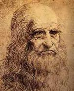
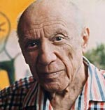
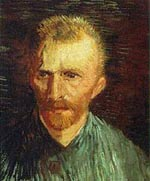
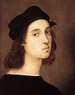
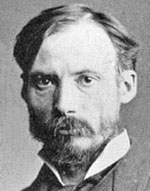
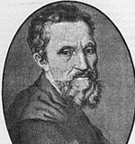
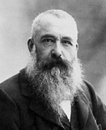
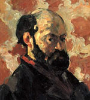

A list of famous artists, chosen mainly from the nineteenth, twentieth or twenty-first centuries
| The Most Famous Artists in The World | ||||||||||||
|---|---|---|---|---|---|---|---|---|---|---|---|---|
| Nr. | Photo | Name | Lifespan | Type of Art | Best known for: | Nr. | Photo | Name | Lifespan | Type of Art | Best known for: | |
| 01 |  | Leonardo Da Vinci | 1452 - 1519 | Renaissance Painter | Mona Lisa | 06 |  | Pablo Picasso | 1881 - 1973 | Cubist Painter | Guernica | |
| 02 |  | Vincent Van Gogh | 1853 - 1890 | Impressionist Painter | The Starry Night | 07 |  | Raphael | 1483 - 1520 | Renaissance Art | Mond Crucifixion | |
| 03 |  |
Rembrandt | 1606 - 1669 | Vivid Realism | The Jewish Bride | 08 |  | August Renoir | 1841 - 1919 | Impressionism Painter | On the Terrace | |
| 04 |  | Michelangelo | 1475 - 1564 | Renaissance Art | Mural on the Sis.Chapel | 09 | Jan Vermeer | 1632 - 1675 | Vivid Depiction | View of Delft | ||
| 05 |  | Claude Monet | 1840 - 1926 | Impressionist Painter | Women in Garden | 10 |  | Paul Cezanne | 1839 - 1906 | Impressionist Painter | The Card Players | |